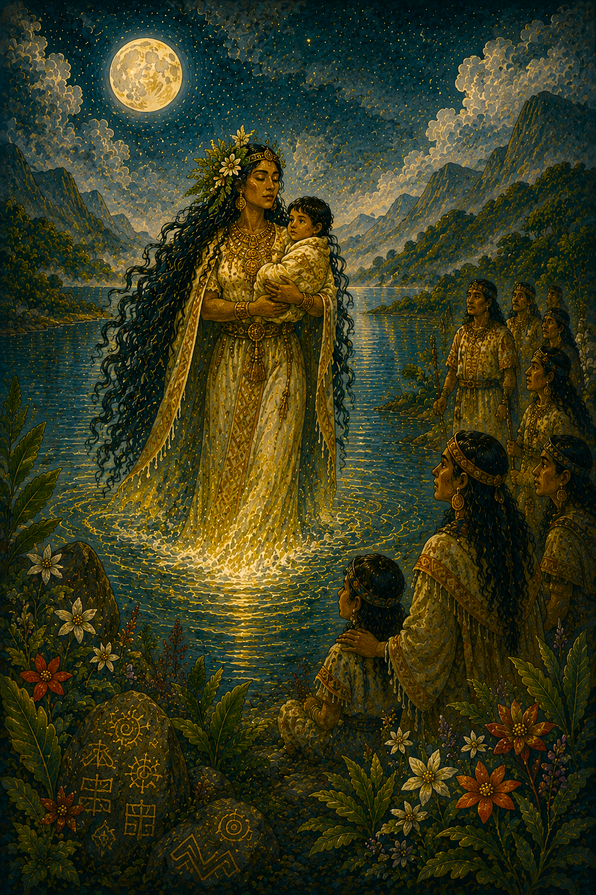
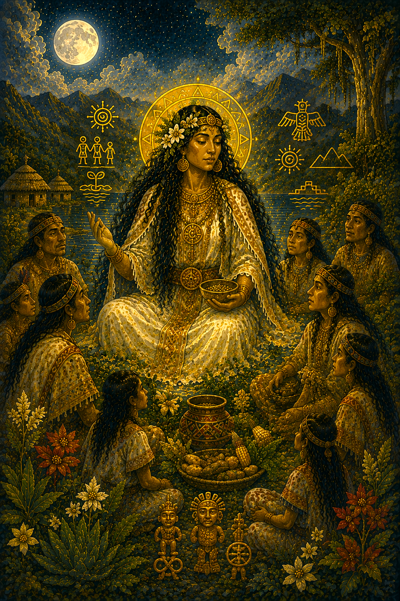
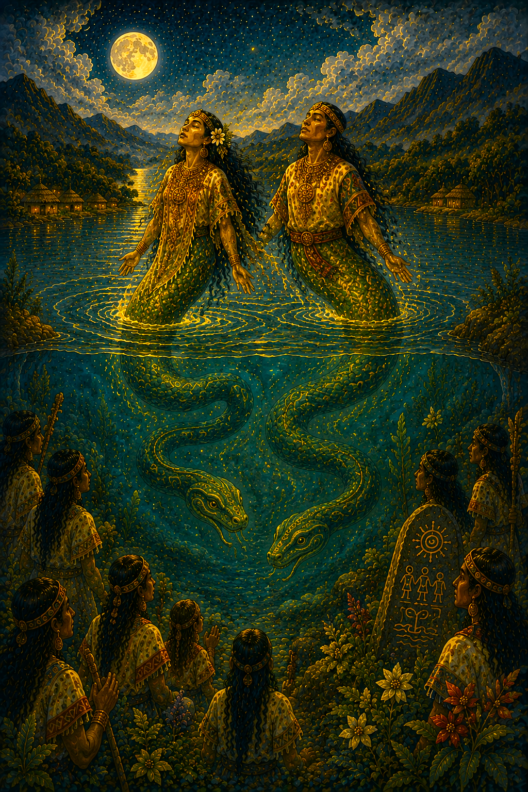
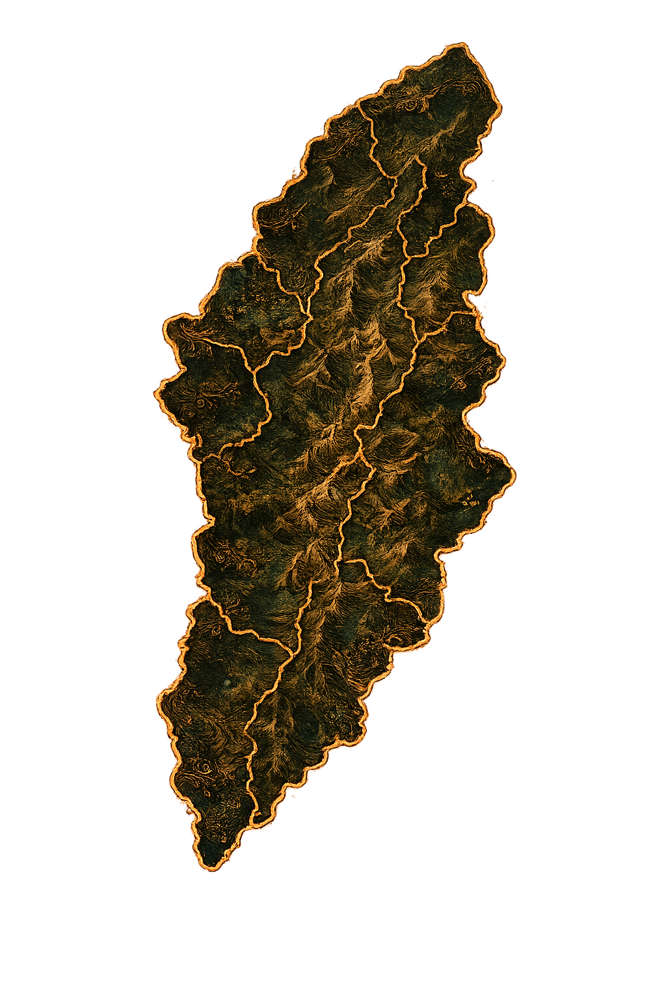
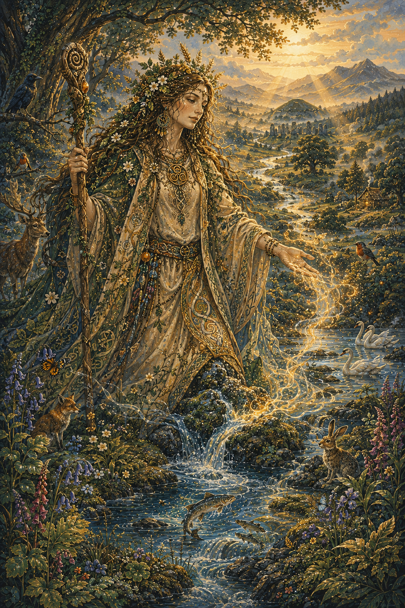

Pachamama
Diosa andina de la fertilidad, la tierra y la naturaleza.
Bachué es una de las figuras más importantes de la mitología muisca y es considerada la madre de la humanidad para este pueblo indígena que habitó el altiplano cundiboyacense.
Según la tradición, emergió de la Laguna de Iguaque acompañada de un niño pequeño. Con el paso del tiempo, aquel niño creció y juntos poblaron la tierra, dando origen a la nación muisca.

La leyenda cuenta que Bachué apareció desde las aguas sagradas de la Laguna de Iguaque llevando consigo a un niño.
Cuando este alcanzó la adultez, ambos recorrieron los territorios muiscas enseñando las normas de convivencia y formando familias que poblaron toda la región.


Bachué enseñó a los seres humanos las costumbres necesarias para vivir en armonía con la naturaleza y entre sí.
Su figura representa la sabiduría, la fertilidad y el respeto por las tradiciones que guiaron durante siglos a las comunidades indígenas de la región.
Tras cumplir su misión en la Tierra, Bachué y su compañero regresaron a la Laguna de Iguaque.
Allí se transformaron en serpientes y desaparecieron en las profundidades del agua, convirtiéndose en guardianes espirituales del pueblo muisca.

Bachué pertenece a la tradición espiritual de los muiscas, pueblo indígena que habitó gran parte del actual altiplano cundiboyacense.
La Laguna de Iguaque, ubicada en Boyacá, es considerada el lugar sagrado donde comenzó la historia de la humanidad según esta tradición.


Bachué simboliza la maternidad, el origen de la vida y la relación espiritual entre los seres humanos y la naturaleza.
Su historia continúa siendo uno de los relatos más representativos de la cosmovisión indígena colombiana y una muestra del valor cultural de las tradiciones ancestrales.
Diosa andina de la fertilidad, la tierra y la naturaleza.

Madre primordial de la Tierra en la mitología griega.

Diosa madre asociada con la creación y la abundancia en la tradición celta.